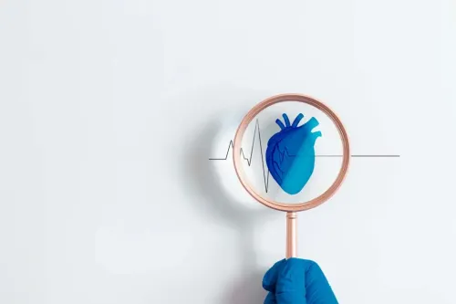
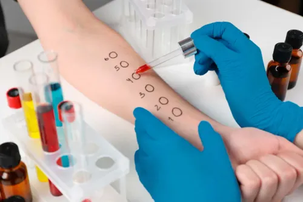

Medicina Interna

Cardiología
Diagnóstico y tratamiento de enfermedades del corazón y sistema circulatorio.
Solicitar por WhatsApp
Infectología
Diagnóstico y manejo de infecciones virales, bacterianas y fúngicas.
Solicitar por WhatsAppNeurología
Diagnóstico y tratamiento de enfermedades del cerebro y sistema nervioso.
Solicitar por WhatsAppReumatología
Manejo de enfermedades autoinmunes y trastornos musculoesqueléticos.
Solicitar por WhatsApp

Alergología
Diagnóstico y tratamiento de alergias y enfermedades del sistema inmunológico.
Solicitar por WhatsApp